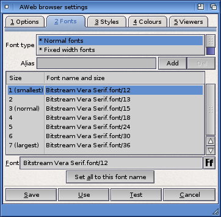

Browser settings: Fonts

Introduction
On this page you can configure what fonts to use for normal text (usually a proportional font) and text that should be rendered in a fixed-width typeface.
In addition to these two standard fonts, many pages on the web explicitly uses other fonts. Unfortunately the names used for these fonts are usually not found on the Amiga, but only on the PC (like "Arial"). Therefore you can add your own font names (called aliases) and define wich Amiga font is to be used for these font names.
Font type
In this list you can select one of the two standard fonts or one of the additionally defined aliases.
Alias
Type or change the name of the alias. You can easily make two or more aliases use the same set of Amiga fonts by separating the names by a comma, e.g. Arial,Helvetica.
Add
Use this button to add a new alias. You should enter a name for the alias or else it won't be saved.
Del
Use this button to delete the currently selected alias.
Font List
Each font set contains fonts in seven different sizes. Size 1 is the smallest, size 7 is the largest. Normal text is usually rendered in size 3.
Select a font size from the list, and use the button to bring up a standard font requester. You then can change the font name and size.
Set all to this font name
If you press this button, all font names are changed to the name of the currently selected font. The sizes remain unchanged.
 Options
Options  Settings requesters
Settings requesters  Styles
Styles